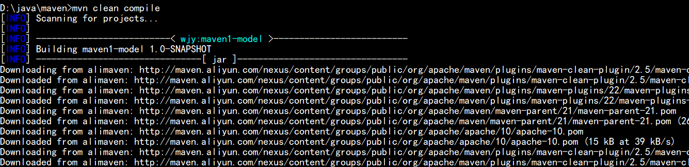
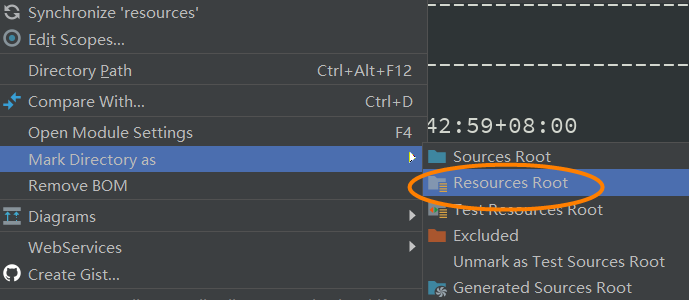
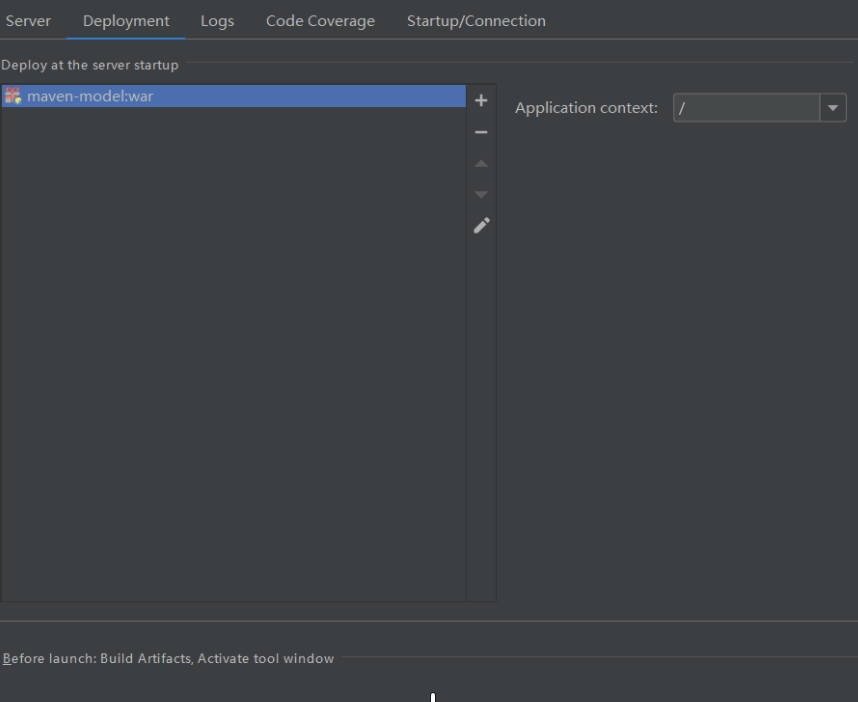

maven 是 Apache 下的一个纯 Java 开发的开源项目。
基于项目对象模型(POM)的概念，它可以从一个中心资料片管理项目构建、报告和文件。
它也是一套强大的自动化构建工具，覆盖了编译、测试、运行、清理、打包和部署等整个项目构建的周期。
并且它提供了一个仓库的概念，可以统一地管理项目所依赖的第三方 jar 包。
1.安装 maven
①下载 maven

- 然后解压压缩包
②安装目录介绍
③配置环境变量
1 | M2_HOME: D:\apache-maven-3.5.4(安装目录) |
注意：
%环境变量%相当于引用这个环境变量的路径。
配置完 path 环境变量后，需要重启命令行(重新加载环境变量)。
④验证配置
- mvn -v 命令：查看 maven 版本
- 如果出现上图文字 说明安装成功
2.第一个 maven 项目
①目录结构
- 使用 maven 管理的 Java 项目都有着相同的项目结构(强制)
②编写代码
- 编写 “Hello Maven!” 类：
1 | public class HelloMaven { |
- 编写测试类：
1 | import org.junit.Assert.*; |
- 目录结构如下：

③新建 pom.xml 文件
pom.xml：用于管理项目依赖和构建过程(维护当前项目的 jar 包)。
- 写完代码后 还需要 pom.xml 文件管理项目的依赖
- 新建 pom.xml 文件 并将之移至项目根目录
1 | <!-- 以下文字: |
④编译运行(进入项目根目录)
- mvn compile：编译项目
- mvn test：测试运行项目
编译运行后，项目根目录会自动生成一个 target 目录，里面存放着测试报告、编译生成的 class 文件等。
3.核心知识
①常用构建命令
- mvn -v：查看 maven 版本
- mvn clean：清理上一次构建生成的所有文件
- mvn compile：编译
- mvn test：测试运行
- mvn package：将项目打包
- mvn install：安装 jar 包到本地仓库
若要在 a 包的类中导入 b 包类，一般需要把包含 b 包类的 jar 包加入到 classpath 路径中。而 maven 为我们提供了更方便的方法：在 b 包的根目录下，我们使用 mvn install 命令将包含其所有类的 jar 文件发布到本地仓库中，然后在 a 包的 pom.xml 文件中添加 b 包的坐标，之后 maven 会自动帮我们进行依赖管理操作。
原理：在编译源代码时，若程序用到了其他的包，maven 会在 pom.xml 文件中查找程序是否引入了该包的坐标。若是已经引入，maven 会在本地仓库中查找其对应的 jar 包并添加到 classpath 路径中，若是没有找到 jar 包，maven 会上网在中央仓库中下载 jar 包并放入本地仓库。若是没有引入，则返回异常信息。
②自动创建目录结构
- archetype 插件：用于自动创建符合 maven 规定的目录结构
| 目录结构详情见 2-① - 创建目录结构的两种方式：
- 1.输入 mvn archetype:generate -DarchetypeCatalog=internal 后按照命令行提示进行创建：
- 2.一次性写入以下代码：
1 | mvn archetype:generate -DarchetypeCatalog=internal -DgroupId=wjy-maven02 -DartifactId=maven02-model -Dversion=1.0-SNAPSHOT -Dpackage=maven02.model |
③坐标
在 maven 中，任何一个依赖、插件、项目构件的输出都可被称为构件。
所有构件都通过坐标作为其唯一标识。<groupId>、<artifactId>、<version>组成了 maven 的基本坐标。
④仓库
仓库：用来管理项目的依赖。
a.本地仓库
- 在本地仓库中找不到项目所需要的构件时 会自动到远程仓库中查找并下载
b.远程仓库
- 远程仓库：即全球中央仓库 地址为 https://repo.maven.apache.org/maven2
- 远程仓库中包含了绝大多数开源的 Java 项目
- 但访问速度较慢(访问量大、且在国外)
c.镜像仓库
- 镜像仓库：与全球中央仓库的功能相同
- 可以将默认的远程仓库改为国内的镜像仓库(访问速度更快、更稳定)
- 修改方法(将下列内容添加到 settings.xml 文件中)：
1 | <!--设置镜像仓库为阿里云--> |
- 修改后 访问远程仓库的操作会转为访问镜像仓库
d.更改仓库默认位置
- maven 的本地仓库默认存放在 C 盘中(占用 C 盘内存！)
- 修改上文的 settings.xml 文件 可以更改本地仓库的位置
- 然后在 maven 项目下执行 mvn clean compile 命令 会更新本地仓库的位置

- 最后将 setting.xml 文件放入新仓库中 防止 maven 升级后需要重新配置此文件
4.项目构建过程
①项目构建与插件
完整的项目构建过程包括：清理(clean)、编译(compile)、测试(test)、打包(package)、集成测试、验证、部署(deploy)等。
maven 和插件是密不可分的，maven 抽象出一套项目构建的生命周期，而插件是对 maven 抽象的具体实现，即 maven 中的所有命令都是调用插件实现的。
在 maven 官网中，提供了很多插件。
插件地址：https://mvnrepository.com/open-source/maven-plugins
②生命周期
maven 定义了三套相互独立的生命周期(clean、default、site)，每套生命周期包含一些有顺序的阶段，后面的阶段依赖于前面的阶段。
即执行某个阶段时，其之前同一周期的阶段会顺序执行，如执行 package 命令时，complie、test 命令会自动顺序执行。
- 在 IDEA 中 pom.xml 文件会自动导入与生命周期有关的插件
a.clean—清理项目
- pre-clean：执行清理前的工作
- clean：清理上一次构建生成的所有文件
- post-clean：执行清理后的工作
b.default(最核心)—构建项目
- compile：编译
- test：测试
- package：打包
- install：安装 jar 包到本地仓库
c.site—生成项目站点
- pre-site：在生成项目站点之前要完成的工作
- site：生成项目的站点文档
- post-site：在生成项目站点之后要完成的工作
- site-deploy：将生成的站点发布到服务器上
5.pom.xml 详解
①pom
pom 是 maven 项目的核心管理文件，用于项目描述、组织管理、依赖管理和构建信息的管理。
方便的第三方框架的管理和便捷的项目构建过程，大大提高了工作效率。
②pom 常用元素
1 | <!-- project是pom.xml文件的根元素，包含了一些约束信息。 --> |
6.依赖
①依赖范围
- 关于
<scope></scope>
1 | <!-- |
- 将 A 中的依赖导入到 B 中
1 | <project> |
②排除依赖传递
1 | <!-- |
③依赖冲突
如果 A 和 B 分别有不同版本的相同构件，而 C 同时依赖于 A 和 B，此时会发生依赖冲突。
- 解决依赖冲突的两个原则：
- 1.短路优先—优先解析路径短(依赖级数少)的版本
- 2.如果路径相同 则看依赖的先后(先声明依赖哪个 就选择哪个依赖的版本)
④聚合
聚合：在 maven 中，将多个项目(模块)放在一起运行。
聚合时，需要新建一个 maven 项目(父模块)，新建项目的 pom 将作为其他 pom 的容器。
1 | <project> |
⑤继承
1 | <!-- |
- 父 pom.xml 中：
1 | <project> |
- 子 pom.xml 中：
1 | <parent> |
7.IDEA 中使用 maven 构建 web 项目
①新建工程
注意：模板 maven-archetype-quickstart 的目录结构如下图所示，应该根据需要选择合适的模板。
②创建目录结构
- 在 src/main 目录下新建 java 目录
- 将 java 目录作为 Sources Root
- 在 src/main 目录下新建 resources 目录
- 将 resources 目录作为 Resources Root

- 在 src/test 目录下新建 java 目录
- 将 java 目录作为 Test Sources Root
- 在 src/test 目录下新建 resources 目录
- 将 resources 目录作为 Test Resources Root
- 目录结构如下：
③配置 tomcat
- 新建 tomcat：
- tomcat 热部署：

④运行 tomcat
- 如果出现上图内容 说明配置成功
⑤IDEA 中管理 maven 的生命周期
- 修改以下部分 并新增工程入口类
- 使用 package 命令 可以将工程打包
⑥运行 jar 包
- 用
360压缩打开 jar 包 - 编辑 MANIFEST.MF 文件
- 添加划线部分
- 保存并退出
- 在命令行运行 jar 包
附录
- 我的个人博客：messi1002.top
- 如有错误或疑惑之处 请联系 wjymessi@163.com